This trick makes it so that you do not need Stone of Agony to locate and enter hidden grottos.
Grottos that exist under boulders are not counted (except for Hyrule Field Near Valley Grotto as Adult), but those within stone circles or other environmental clues hints are, and this affects both grottos you blast or hammer open and those opened via Song of Storms.
If grottos are randomised it affects the ability to enter the grotto and reach the area shuffled to be behind it,not the vanilla grottos that would have been located there.
Hyrule Field Inner Fence Grotto.
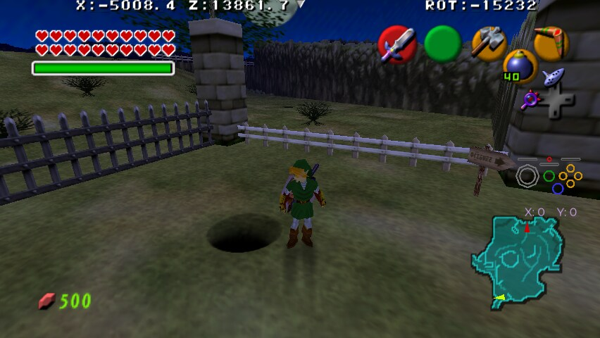
Hyrule Field Near Valley Grotto, even as Adult when the Boulder exists.
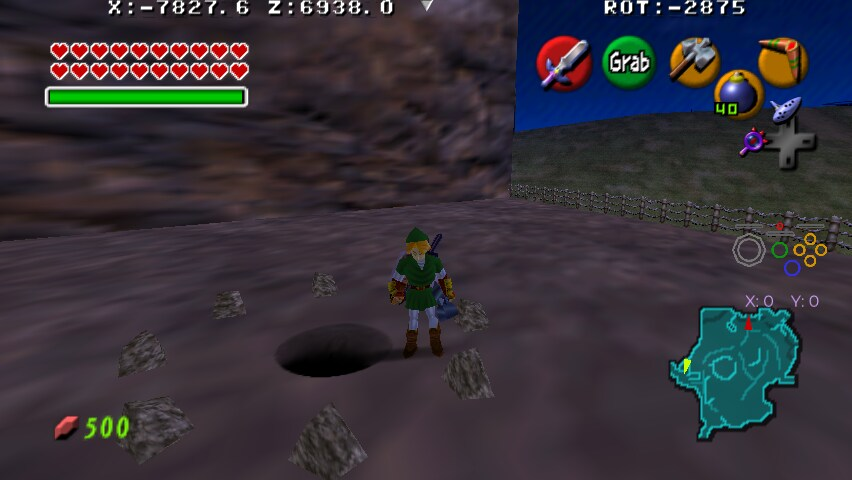
Hyrule Field Near Bridge Grotto.
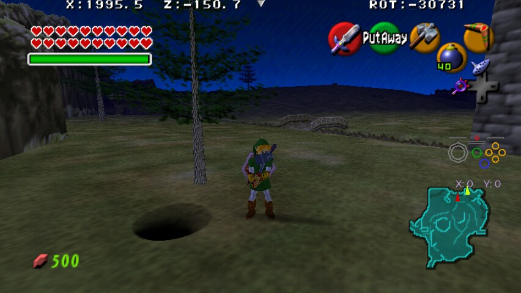
Hyrule Field Lone Tree Grotto.
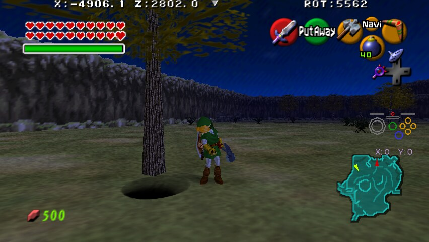
Kokiri Forest Storms Grotto.
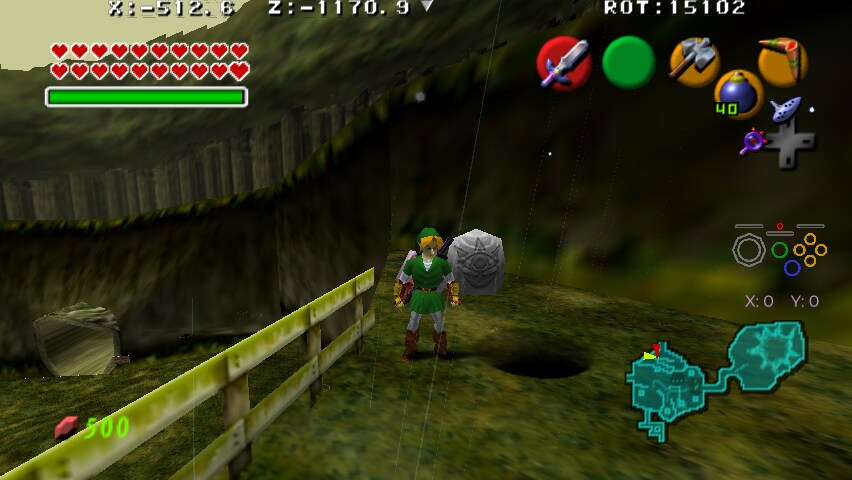
Sacred Forest Meadow Wolfos Grotto.
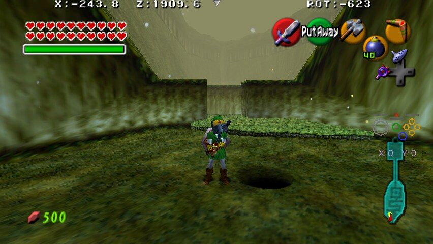
Sacred Forest Meadow Storms Grotto.
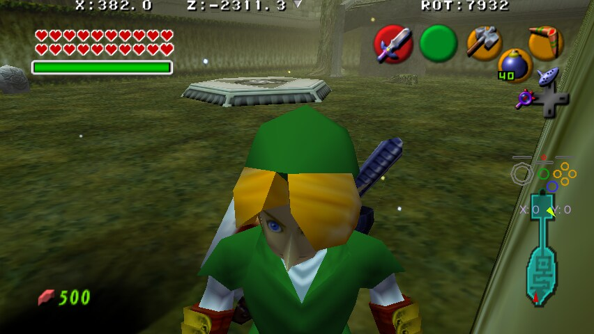
Kakariko Village Central Grotto.
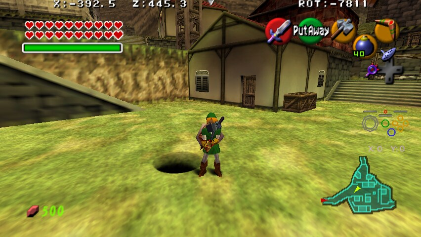
Death Mountain Trail Storms Grotto.
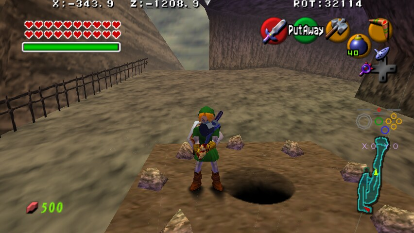
Zora's River Storms Grotto.
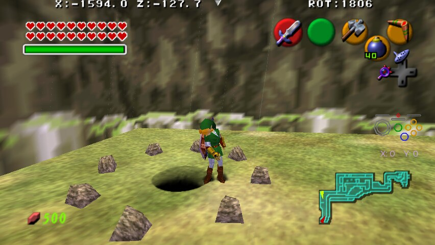
Zora's Domain Grotto.
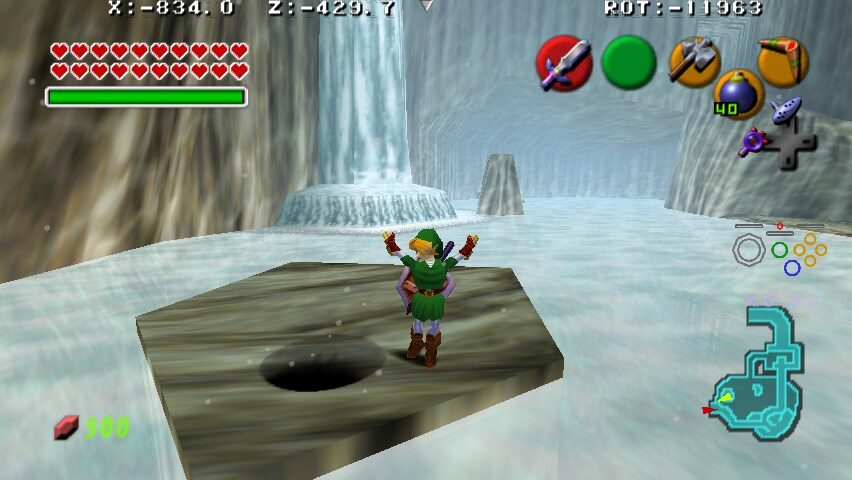
Gerudo Valley Behind Tent Grotto.
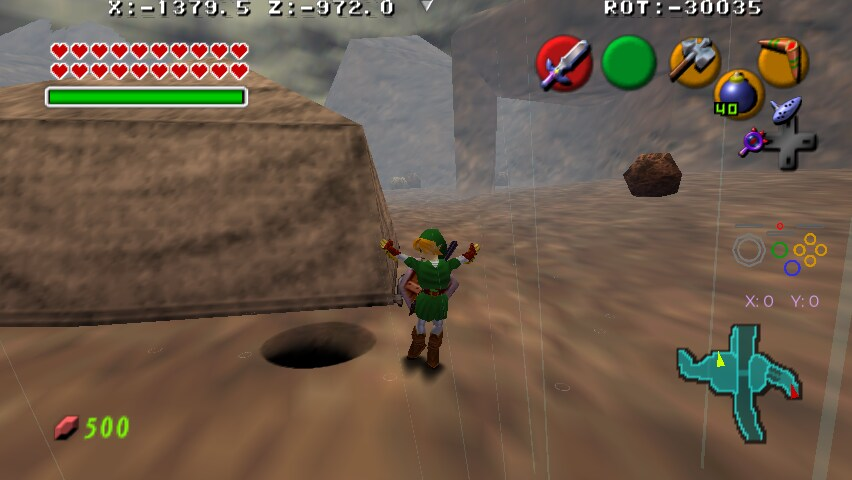
Gerudo Fortress Grotto.
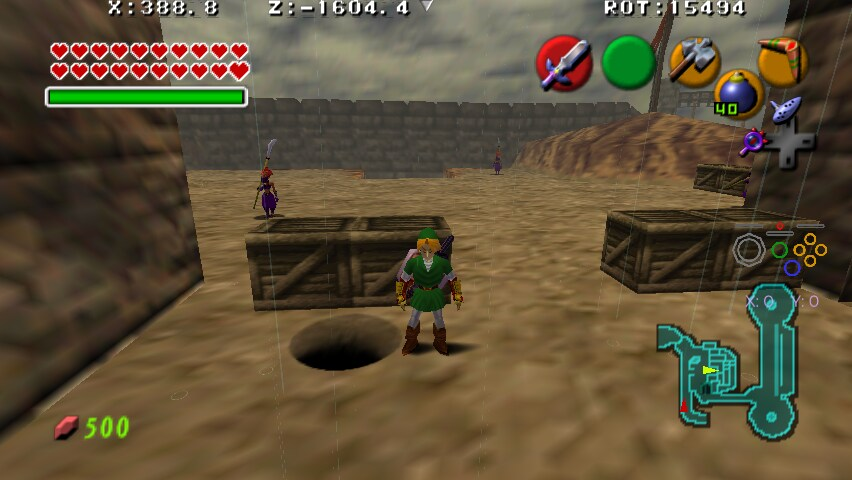